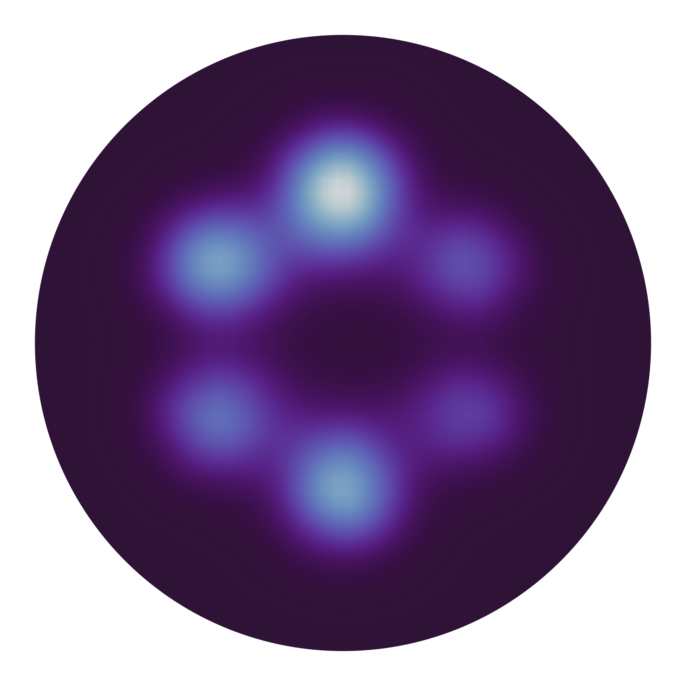

Example: Molecular Ferroelectric (TMCM-CdCl3)
This example computes molecular orientation in the hybrid organic-inorganic ferroelectric TMCM-CdCl3. Unlike perovskites where polarization arises from ionic off-centering, here the polarization originates from the orientation of the TMCM cation. The Cl-N bond vector serves as a proxy for the molecular dipole direction. For core concepts, see Introduction to ferrodispcalc.
For details, see Phys. Rev. Lett. 136, 016801 (2026).
Complete Script
import numpy as np
import matplotlib.pyplot as plt
import matplotlib.patches as patches
from scipy.ndimage import gaussian_filter
from ase.io import read
from ferrodispcalc.neighborlist import build_neighbor_list
from ferrodispcalc.compute import calculate_displacement
# 1. Read structure and compute Cl-N bond vectors
atoms = read("POSCAR")
nl = build_neighbor_list(atoms, ["Cl"], ["N"], cutoff=4, neighbor_num=1)
disp = calculate_displacement(atoms, nl) # shape (n_Cl, 3)
# 2. Take in-plane components (x, y)
xy = disp[:, :2]
# 3. Plot orientation distribution as a smoothed heatmap
fig, ax = plt.subplots(figsize=(4, 4), dpi=300)
hist, xedges, yedges = np.histogram2d(
xy[:, 0], xy[:, 1], bins=50, range=[[-2.1, 2.1], [-2.1, 2.1]]
)
hist = gaussian_filter(hist.T / xy.shape[0], sigma=1)
im = ax.imshow(
hist, origin="lower", cmap="twilight_shifted",
extent=[xedges[0], xedges[-1], yedges[0], yedges[-1]],
interpolation="bilinear",
)
# Clip to a circle
circle = patches.Circle((0, 0), 2, transform=ax.transData)
im.set_clip_path(circle)
ax.add_patch(patches.Circle((0, 0), 2, ec="white", fc="none", lw=1.5))
ax.set_xlim(-2.1, 2.1)
ax.set_ylim(-2.1, 2.1)
ax.set_aspect("equal")
ax.axis("off")
plt.tight_layout()
plt.savefig("molecular_orientation.png", dpi=300)
{kind=link}

In-plane Cl-N bond vector distribution in TMCM-CdCl3, showing the six-fold molecular orientation pattern.
Step-by-Step Breakdown
Compute Cl-N Bond Vectors
The idea is simple: treat each Cl as a “center” atom and find its nearest N neighbor.
calculate_displacement then returns the vector from the coordination center
(here just one neighbor, so the neighbor itself) to the center atom — i.e. the Cl-N bond vector.
from ase.io import read
from ferrodispcalc.neighborlist import build_neighbor_list
from ferrodispcalc.compute import calculate_displacement
atoms = read("POSCAR")
# Each Cl has 1 nearest N neighbor
nl = build_neighbor_list(atoms, ["Cl"], ["N"], cutoff=4, neighbor_num=1)
# disp shape: (n_Cl, 3) — one bond vector per Cl atom
disp = calculate_displacement(atoms, nl)
This is the same build_neighbor_list / calculate_displacement workflow used for
perovskites — the only difference is the choice of elements and coordination number.
Plot the Orientation Distribution
We project the bond vectors onto the xy-plane and plot a smoothed 2D histogram to visualize the distribution of molecular orientations.
import numpy as np
import matplotlib.pyplot as plt
import matplotlib.patches as patches
from scipy.ndimage import gaussian_filter
xy = disp[:, :2]
fig, ax = plt.subplots(figsize=(4, 4), dpi=300)
# 2D histogram, normalized and smoothed
hist, xedges, yedges = np.histogram2d(
xy[:, 0], xy[:, 1], bins=50, range=[[-2.1, 2.1], [-2.1, 2.1]]
)
hist = gaussian_filter(hist.T / xy.shape[0], sigma=1)
im = ax.imshow(
hist, origin="lower", cmap="twilight_shifted",
extent=[xedges[0], xedges[-1], yedges[0], yedges[-1]],
interpolation="bilinear",
)
# Clip to a circle for a clean look
circle = patches.Circle((0, 0), 2, transform=ax.transData)
im.set_clip_path(circle)
ax.add_patch(patches.Circle((0, 0), 2, ec="white", fc="none", lw=1.5))
ax.set_xlim(-2.1, 2.1)
ax.set_ylim(-2.1, 2.1)
ax.set_aspect("equal")
ax.axis("off")
plt.tight_layout()
plt.savefig("molecular_orientation.png", dpi=300)
The six bright spots in the resulting plot correspond to the six preferred orientations of the TMCM cation in the hexagonal lattice.
See calculate_displacement() and
build_neighbor_list() for API details.